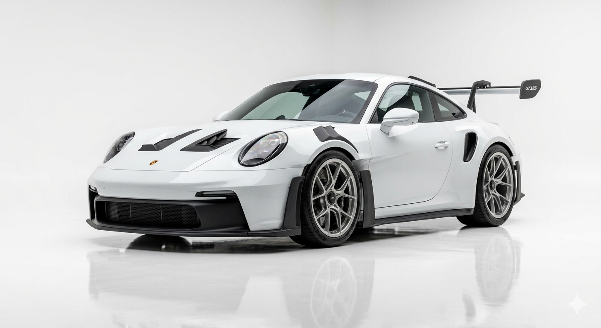
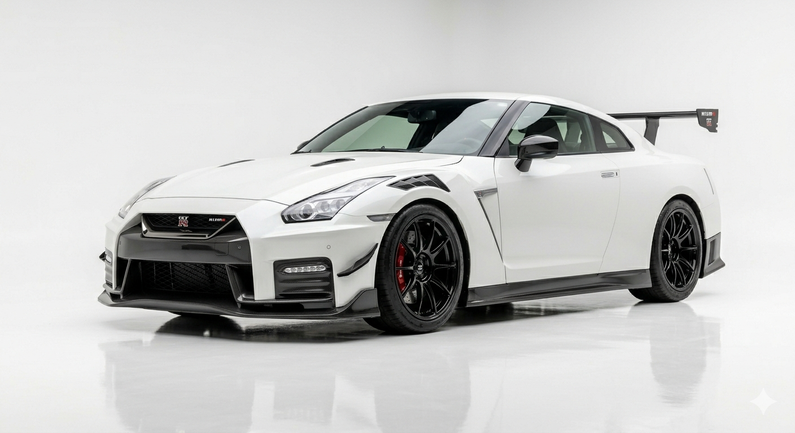
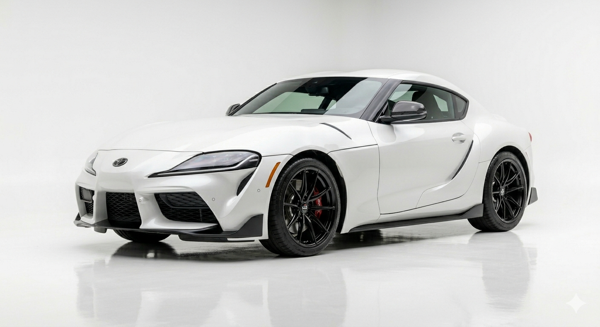
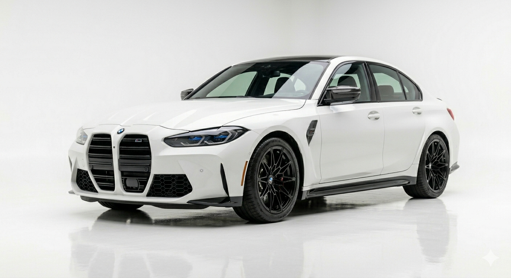
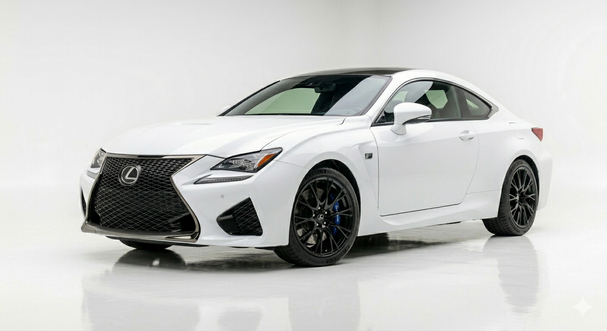
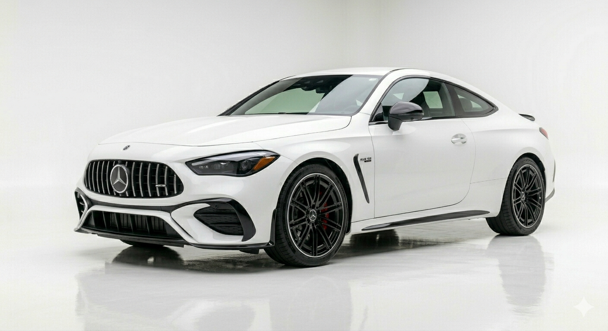

Yüksək performanslı və yarış ruhlu idman avtomobilidir. Aerodinamik quruluşu və böyük arxa spoyleri ona yolda daha yaxşı sabitlik verir. Bu model dizaynı və performansı ilə avtomobil sevərlərin ən çox bəyəndiyi maşınlardan biridir.

Yaponiyanın ən məşhur idman avtomobillərindən biridir və “Godzilla” ləqəbi ilə tanınır. Onun 3.8 litrlik V6 mühərriki əl işi ilə hazırlanır və çox yüksək güc istehsal edir. Nissan GT-R həm gündəlik istifadə, həm də yarış üçün uyğun güclü bir modeldir.

Güclü performansı və müasir dizaynı ilə seçilən məşhur idman avtomobilidir. Onun 3.0 litrlik turbo mühərriki 382 at gücü hasil edir və çox sürətli akselerasiya təmin edir. Toyota GR Supra həm gündəlik istifadə, həm də yüksək performans sevənlər üçün ideal seçimdir.

Almaniyada istehsal olunan yüksək performanslı idman sedanıdır. Salonunda müasir texnologiyalar, rəqəmsal ekranlar və rahat idman oturacaqları yerləşir. BMW M3 sürət, komfort və prestiji bir arada təqdim edən xüsusi avtomobildir.

Güclü və etibarlı performansı ilə seçilən lüks idman kupe avtomobilidir. Arxa ötürücü sistemi və premium salonu sürücüyə həm rahatlıq, həm də həyəcanlı sürüş təcrübəsi yaşadır. Lexus RC F özünəməxsus dizaynı və nadir V8 mühərriki ilə avtomobil həvəskarlarının diqqətini cəlb edir.

Lüks və performansı birləşdirən güclü idman kupe avtomobilidir. Onun 3.0 litrlik sıralı 6 silindrli turbo mühərriki təxminən 443 at gücü hasil edir. Mercedes-AMG CLE 53 aqressiv dizaynı və premium salonu ilə diqqət çəkən prestijli modeldir.